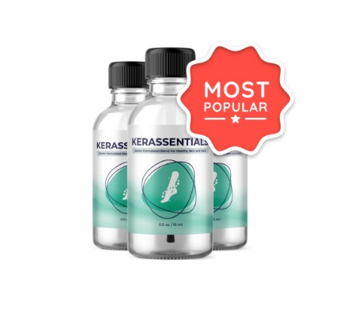

Análisis de Kerassentials™: ¿Puede un Aceite Antifúngico Erradicar Hongos Resistentes en Uñas y Piel?
Por el Equipo Editorial de Derm Audit • Actualizado en Agosto 2026 • 7 Min de Lectura

¿Por Qué los Hongos en las Uñas Son Tan Difíciles de Erradicar?
Imagina un sótano oscuro y húmedo con moho creciendo profundamente debajo de los tablones del suelo. Si solo rocías un desinfectante en la superficie del piso, eliminas las esporas superficiales por un par de días, pero las raíces profundas bajo la madera continúan creciendo y multiplicándose.
Eso es exactamente lo que ocurre con los hongos en las uñas (onicomicosis). Las cremas y esmaltes comunes no pueden atravesar la dura lámina de queratina. El hongo vive y se alimenta cómodamente en el lecho ungueal profundo, volviendo la uña gruesa, quebradiza, amarillenta y con mal olor.
⚠️ El Peligro de las Pastillas Antifúngicas Orales (Toxicidad Hepática):
Muchos médicos recetan pastillas orales potentes (como la terbinafina). Sin embargo, estos medicamentos orales conllevan advertencias de toxicidad hepática grave y requieren análisis de sangre periódicos para vigilar las enzimas transaminasas (ALT/AST). ¡Un tratamiento tópico en aceite de penetración profunda es una alternativa infinitamente más segura para tu organismo!
El Ataque Antifúngico de 4 Fases de Kerassentials™
A diferencia de los esmaltes espesos que se secan en la superficie, la base de aceite lipídico de Kerassentials™ está formulada para deslizarse bajo la uña y penetrar la matriz dérmica:
- Fase 1: Penetración en el Lecho Profundo — Los aceites portadores de almendra y lino transportan los activos al corazón de la infección.
- Fase 2: Destrucción de la Membrana Fúngica — El Ácido Undecilénico y el Árbol del Té perforan las paredes celulares del hongo, impidiendo que siga reproduciéndose.
- Fase 3: Alivio de la Piel y Cutícula — El Aloe Vera y la Vitamina E calman la inflamación, eliminan el picor y regeneran la piel agrietada.
- Fase 4: Crecimiento de Uña Nueva Transparente — La queratina se nutre continuamente, permitiendo que una uña limpia, rosada y fuerte reemplace a la uña infectada.
Los 4 Pilares Antifúngicos y Nutritivos en Kerassentials
1. Árbol del Té y Lavanda
El Dúo Antifúngico: Aceites esenciales de grado médico que atacan las esporas fúngicas y protegen la queratina contra reinfecciones.
2. Ácido Undecilénico (Grado USP 5%)
El Destructor de Biopelículas: Ácido graso natural altamente potente que destruye el escudo protector de los hongos resistentes.
3. Aceite de Almendras Dulces y Lino
Los Nutrientes de Queratina: Ricos en ácidos grasos Omega-3 que restauran la flexibilidad de la uña y evitan que se quiebre.
4. Aloe Vera y Vitamina E
La Matriz Calmante: Calma el enrojecimiento de la cutícula, repara la piel agrietada y crea un escudo antioxidante.
Comparativa Clínica: Kerassentials™ frente a Lacas Tradicionales de Farmacia
| Característica / Tratamiento |
Kerassentials™
Ganador: Complejo en Aceite de Penetración
|
Lacas de Amorolfina / Ciclopirox
Esmaltes Químicos de Farmacia
|
|---|---|---|
| Formato de Entrega | Aceite Lipídico Bioactivo (Se filtra activamente bajo la uña y cutícula) | Laca endurecedora sintética (Forma una película que suele descamarse) |
| Seguridad Sistémica | 100% Seguro (Cero riesgo hepático o estomacal) | Seguro a nivel tópico, pero suele combinarse con pastillas orales hepatotóxicas |
| Nutrición de Queratina | Nutre la uña con Omega-3, Vitamina E y Aloe Vera | Seca la lámina de queratina dejándola quebradiza |
| Garantía de Devolución | 60 Días 100% Sin Riesgo | Sin reembolso en farmacias tras abrir el frasco |
| Precio Oficial | $69.00 / frasco ($49 en paquetes de tratamiento) | $40.00 – $75.00 por frasco pequeño |
| Acción Recomendada | Reclamar Oferta Kerassentials | Venta en Farmacias |
Lo Que Más Destaca:
- Aceite lipídico de penetración profunda que llega al lecho ungueal
- Elimina hongos, olor desagradable y engrosamiento amarillento
- Nutre la queratina con Omega-3 y aceites botánicos puros
- Fácil aplicación diaria con gotero y pincel aplicador incluido
- Protegido por una garantía completa de devolución de 60 días
Aspectos a Considerar:
- El crecimiento completo de una uña sana del pie toma de 3 a 6 meses
- Debe aplicarse con constancia 2 a 4 veces al día para mejores resultados
Cronograma de Crecimiento de Uña Nueva en 90 Días
Días 1 – 14
Desaparición del picor y del mal olor. La piel alrededor de la uña se desinflama y se suaviza.
Días 15 – 45
La infección se detiene. Comienza a crecer una media luna limpia y transparente desde la cutícula.
Días 46 – 90+
La uña sana y fuerte empuja y reemplaza por completo la zona amarilla anterior. Queratina limpia y renovada.
Preguntas Frecuentes
¿Puedo usar esmalte de uñas de color durante el tratamiento?
Se recomienda evitar los esmaltes sintéticos de color durante las primeras semanas, ya que crean una barrera impermeable que atrapa la humedad y dificulta la penetración de los aceites en el lecho ungueal.
¿Cómo se aplica correctamente Kerassentials?
Agita el frasco y aplica 4 gotas sobre la uña y cutícula por la mañana y por la noche utilizando el pincel aplicador y un hisopo de algodón para asegurarse de que el aceite penetre por los bordes y bajo la punta de la uña.
¿Lista para Lucir Uñas Limpias, Fuertes y Saludables?
Recupera la belleza y salud de tus uñas con el aceite terapéutico Kerassentials™ respaldado por 60 días de garantía sin riesgo.
Visitar la Tienda Oficial de Kerassentials y Reclamar Oferta